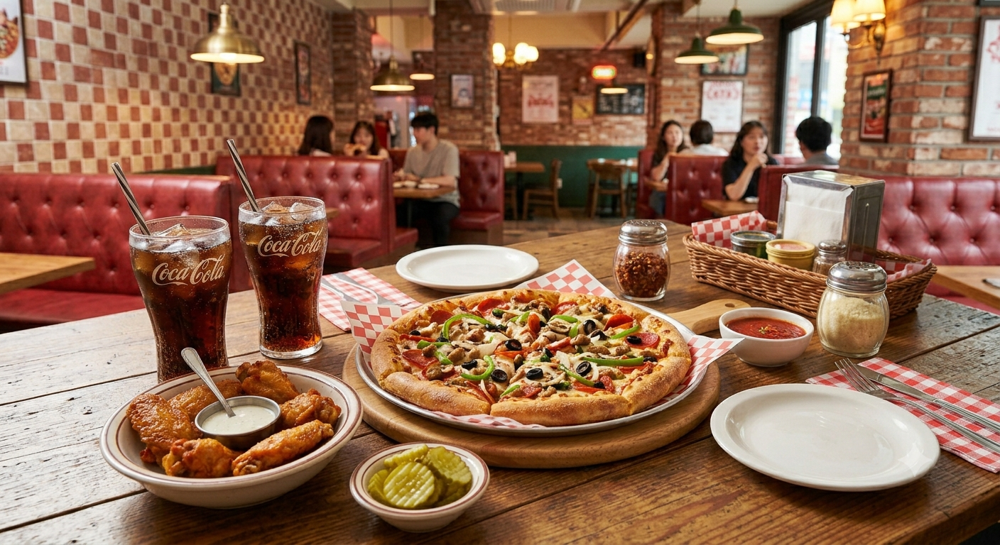
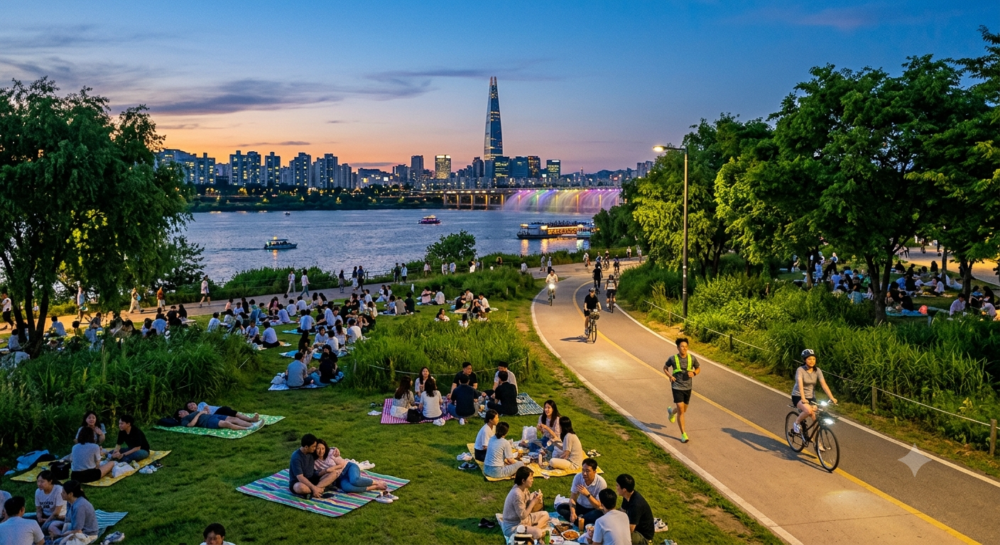

① 한땀스시
→
② 용산전자랜드
→
③ 스타벅스
→
④ 잭슨피자
→
⑤ 이촌한강공원
①
한땀스시
서울 용산구 한강대로 108 2층
🕐 오후 1:00 — 점심
②
용산전자랜드 신관
서울 용산구 청파로 74
🕑 오후 2:30 — 구경
③
스타벅스 용산 ET랜드점
서울 용산구 청파로 74 전자랜드 1층
🕞 오후 3:30 — 카페 + 닌텐도

④
잭슨피자 이촌점
서울 용산구 이촌로 224
🕔 오후 5:30 — 저녁

⑤
이촌한강공원
서울 용산구 이촌로 72길 62
🌇 오후 6:30 — 산책